<!DOCTYPE html>


<html lang="zh-CN">


<head>
  <meta charset="utf-8" />
    
  <meta name="viewport" content="width=device-width, initial-scale=1, maximum-scale=1" />
  <title>
    微积分课程第一部分学习笔记 |  VincereZhou&#39;s blog
  </title>
  <meta name="generator" content="hexo-theme-ayer">
  
  <link rel="shortcut icon" href="/images/mojie.jpg" />
  
  
<link rel="stylesheet" href="/dist/main.css">

  <link rel="stylesheet" href="https://cdn.jsdelivr.net/gh/Shen-Yu/cdn/css/remixicon.min.css">
  
<link rel="stylesheet" href="/css/custom.css">

  
  <script src="https://cdn.jsdelivr.net/npm/pace-js@1.0.2/pace.min.js"></script>
  
  

  

<link rel="alternate" href="/atom.xml" title="VincereZhou's blog" type="application/atom+xml">
</head>

</html>

<body>
  <div id="app">
    
      
    <main class="content on">
      <section class="outer">
  <article
  id="post-微积分课程第一部分学习笔记"
  class="article article-type-post"
  itemscope
  itemprop="blogPost"
  data-scroll-reveal
>
  <div class="article-inner">
    
    <header class="article-header">
       
<h1 class="article-title sea-center" style="border-left:0" itemprop="name">
  微积分课程第一部分学习笔记
</h1>
 

    </header>
     
    <div class="article-meta">
      <a href="/posts/b445140c/" class="article-date">
  <time datetime="2021-04-14T09:33:12.000Z" itemprop="datePublished">2021-04-14</time>
</a> 
  <div class="article-category">
    <a class="article-category-link" href="/categories/%E7%90%86%E8%AE%BA%E5%AD%A6%E4%B9%A0/">理论学习</a> / <a class="article-category-link" href="/categories/%E7%90%86%E8%AE%BA%E5%AD%A6%E4%B9%A0/%E5%BE%AE%E7%A7%AF%E5%88%86/">微积分</a>
  </div>
  
<div class="word_count">
    <span class="post-time">
        <span class="post-meta-item-icon">
            <i class="ri-quill-pen-line"></i>
            <span class="post-meta-item-text"> 字数统计:</span>
            <span class="post-count">4.2k</span>
        </span>
    </span>

    <span class="post-time">
        &nbsp; | &nbsp;
        <span class="post-meta-item-icon">
            <i class="ri-book-open-line"></i>
            <span class="post-meta-item-text"> 阅读时长≈</span>
            <span class="post-count">15 分钟</span>
        </span>
    </span>
</div>
 
    </div>
      
    <div class="tocbot"></div>


  
    <div class="article-entry" itemprop="articleBody">
       
  <p>这是根据美国拉马尔大学 <em>Paul Dawkins</em> 老师的<strong>微积分</strong>教学材料写的笔记。</p>
<p>网址为：<a target="_blank" rel="noopener" href="https://tutorial.math.lamar.edu/Classes/CalcI/CalcI.aspx">https://tutorial.math.lamar.edu/Classes/CalcI/CalcI.aspx</a>  （点击网页右上角的 download，选择 complete book 即可下载 pdf 格式的书籍 ）</p>
<p>我发现很多英文教材很适合自学，而且言语恳切，不嫌啰嗦，生怕你看不懂，不理解。这本书的特点也是如此，写的非常仔细，完全可以根据作者提供的pdf 自学。</p>
<span id="more"></span>
<h1>Review</h1>
<p>radical 根数</p>
<h2 id="逆函数（inverse-function）">逆函数（inverse function）</h2>
<p>如果两个不同的x值不会对应同一个y值，那么我们称这个函数是一对一的（<strong>one to one</strong>）。</p>
<p>但是证明函数是一对一的，可能很困难。因此我们一般都是假设函数不是一对一的，或者我们严格限定定义域（<strong>domain</strong>）使得函数符合一对一的性质。</p>
<p>现在让我们来定义<strong>逆函数</strong></p>
<blockquote>
<p><strong>逆函数</strong>：如果有两个满足<strong>一对一</strong>的函数 f(x) 和 g(x) ，如果满足以下式子，我们就称它们互为逆函数，记为 f^-1^(x) 或  g^-1^(x)</p>
</blockquote>
<p>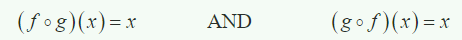</p>
<p>找出逆函数的五个步骤。相比我之前的认识，就是增加了第五步，复合函数的证明。</p>
<p>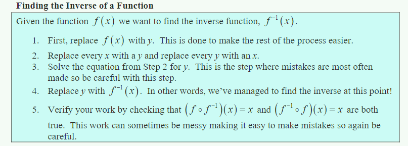</p>
<p>第5步从理论上讲需要证明两种复合函数都等于x。</p>
<p>一个函数与其逆函数<strong>关于y=x对称</strong>。</p>
<p>三角函数中 角度为degree 弧度为 radian 。单位弧度定义为圆弧长度等于半径时的圆心角。</p>
<ul>
<li>sin(-x) = -sin(x)  ; tan(-x) = -tan(x)</li>
<li>cos(-x) = cos(x)</li>
</ul>
<h1>limits</h1>
<p>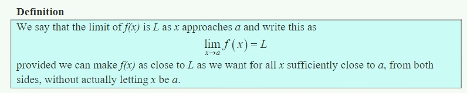</p>
<p>这种定义是通俗的定义方式，不是使用数学式子严格表示的定义。</p>
<p>要点：</p>
<ol>
<li>极限是需要从<strong>左右两边靠近</strong>均成立的。（<strong>both sides</strong>）</li>
<li>极限<strong>不需要</strong> x 真的取到 a值 。</li>
</ol>
<p>判断极限存不存在，简单地说，就是随着x 越来越接近 a (<strong>from two sides</strong>) ，f(x) <strong>must</strong> 越来越接近 L 。</p>
<p>另外，极限的定义里不包括 <strong>x = a</strong>，极限的值和 ** x = a ** 的值是<strong>不相关</strong>的。极限只和 点a 附近的函数值有关。</p>
<p>重申：有的时候函数的定义域可能不包括a，但是这也不影响其极限的存在。</p>
<blockquote>
<p>We are <strong>NOT</strong> asking what y value the graph takes at the point in question.  In other words, we are asking what the graph is doing <strong>around</strong> the point x = a.</p>
</blockquote>
<h2 id="one-sided-limits">one-sided limits</h2>
<p>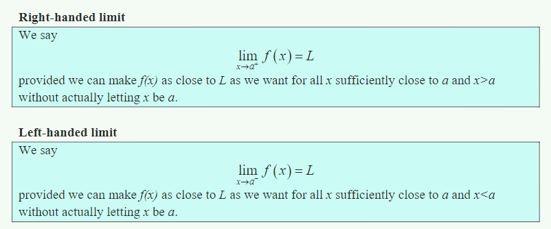</p>
<p>one-sided limits 与 normal limits 的区别就是<strong>单边</strong>与<strong>双边</strong>。</p>
<p>单边极限与双边极限的关系如下：</p>
<p>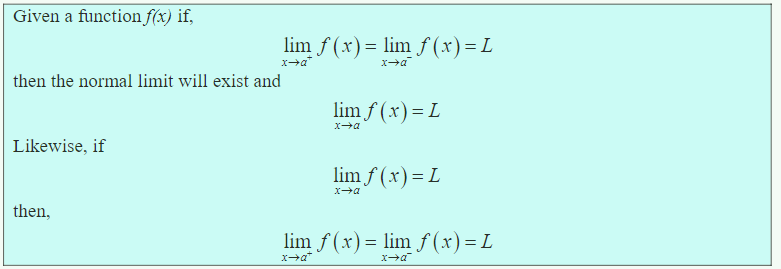</p>
<h2 id="limit-Properties">limit Properties</h2>
<p>极限的性质如下：</p>
<p>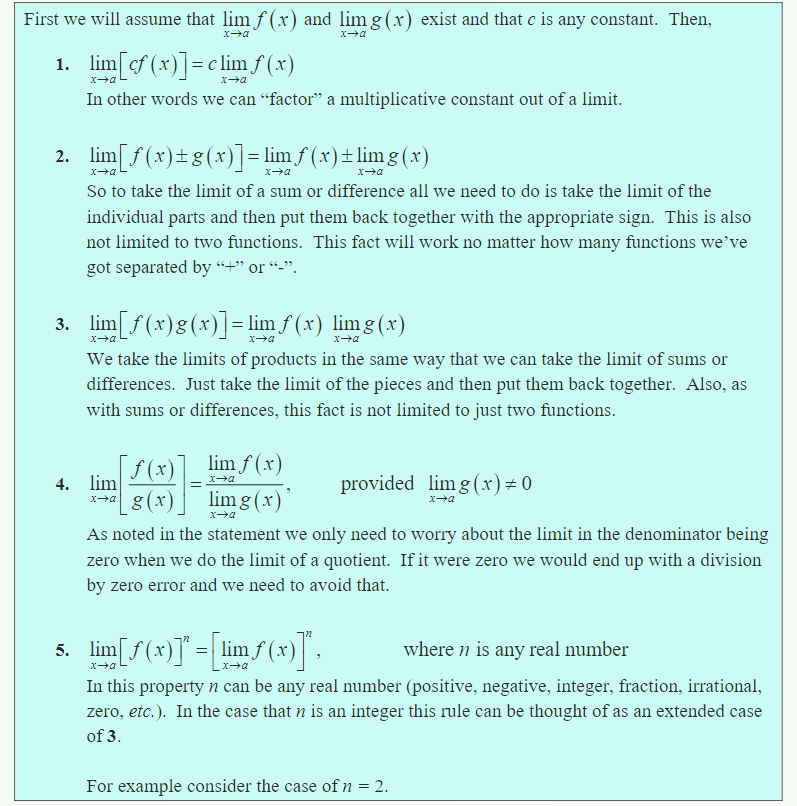</p>
<p>这些性质对<strong>单边</strong>极限也适用。</p>
<p>对于多项式，其某点的极限值等于其函数值。</p>
<p>目前学过的大部分函数都是“nice enough&quot; ，在其定义域内，其极限值都等于函数值。其组合函数一般也是”nice enough&quot;。</p>
<p>定理：</p>
<p>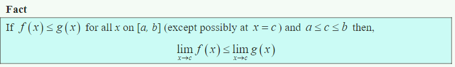</p>
<p>由此引出<strong>夹逼定理</strong>（<strong>Squeeze Theorem</strong>）</p>
<p>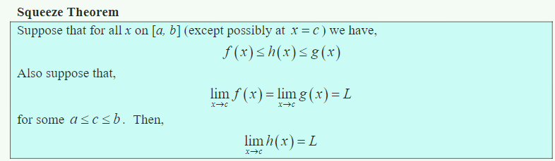</p>
<p>看一个图，一下就明白（这里假设三个函数是nice enough，但实际夹逼定理不需要满足这一点）</p>
<p>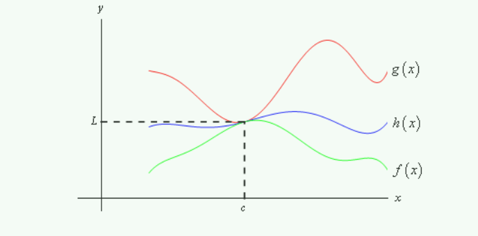</p>
<h2 id="infinite-Limits">infinite Limits</h2>
<p>无穷大的定义：</p>
<p>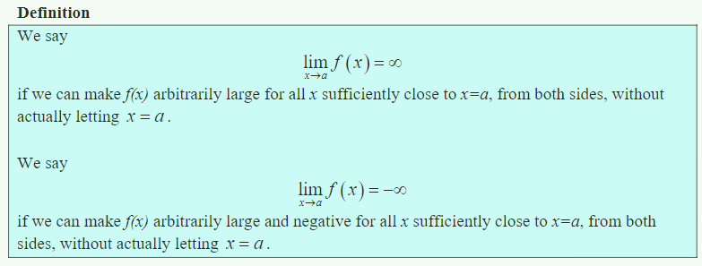</p>
<p>垂直渐进线定义：</p>
<p></p>
<h2 id="limits-at-infinity">limits at infinity</h2>
<p>这个是当x 为无穷大时的极限。</p>
<p>对于多项式，其正无穷或负无穷处的极限值等于其最高项的极限值。</p>
<p>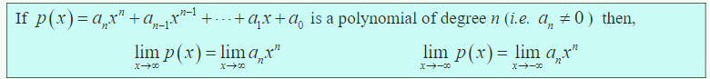</p>
<p>水平渐进线（horizontal asymptote）定义：</p>
<p>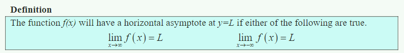</p>
<p>对于多项式求极限，一个最重要的地方就在于找到<strong>最大项</strong>，然后提取出来。这里的最大项指的是<strong>与0偏离最远</strong>的项</p>
<p>如果是分式，那么只看<strong>分母</strong>的<strong>最大项</strong>。</p>
<h2 id="continuity">continuity</h2>
<p>在前面的章节中，我们一直用 ” nice enough &quot; 来定义一个函数其极限值等于函数值的性质。现在我们来定义什么叫做 ” nice enough &quot;。</p>
<p>连续性定义：</p>
<p>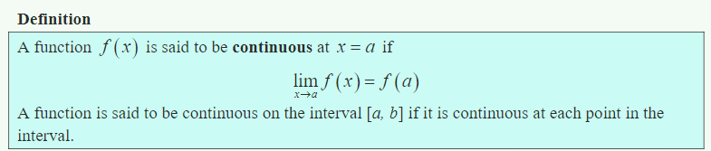</p>
<p>反过来说也成立。也就是说如果再这一点 极限值等于函数值，那么函数在这一点具有连续性。反之也成立。</p>
<p>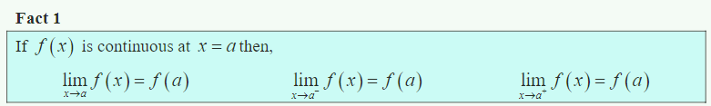</p>
<p>常见的非连续性如下，第一种称为 jump discontinuity ，第二种称为 removable discontinuity 。</p>
<p>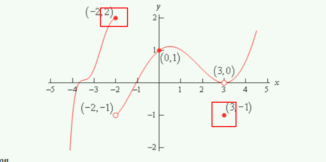</p>
<p>如果我们简单地定义连续性，一个函数如果在某一区间具有连续性，我们用铅笔画出这一段从开始到结束的函数图像，中间不需要拿起铅笔（without ever once picking up our pencil ）。也就是能一气呵成的画完这一段。</p>
<p>另外一种解释，如果函数图像 没有 breaks 或 holes（指空心点） ，我们就说它在这一段是连续的。</p>
<h3 id="求复合函数（满足连续）的极限定理（重要）">求复合函数（满足连续）的极限定理（<strong>重要</strong>）</h3>
<p>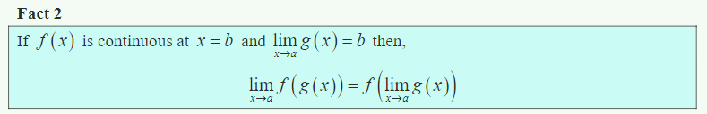</p>
<h3 id="介值定理（intermediate-value-theorem）">介值定理（intermediate value theorem）</h3>
<p>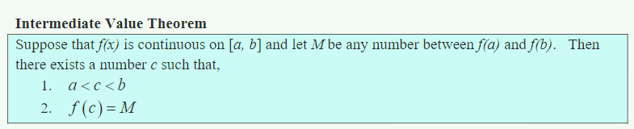</p>
<p>介值定理的主要应用为，证明函数在某个区间有根。但是介值定理没办法告诉我们具体位置，也没办法证明是几个根。</p>
<p>注意，如果一个值不在两个端点的区间上，不能反推函数在这个区间不存在这个值。</p>
<h3 id="The-Definition-of-the-Limit">The Definition of the Limit</h3>
<p>极限的准确定义：</p>
<p>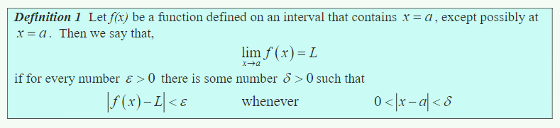</p>
<p>再次重申，极限的定义只是 around a ，而不包括 x = a。我们不关心 x = a 时的情况。</p>
<p>左右极限定义如下：</p>
<p>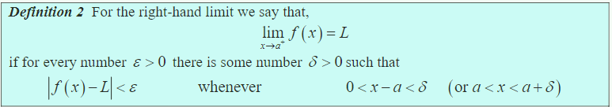</p>
<p>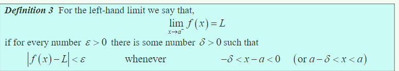</p>
<p>极限为正无穷和负无穷的定义如下：</p>
<p>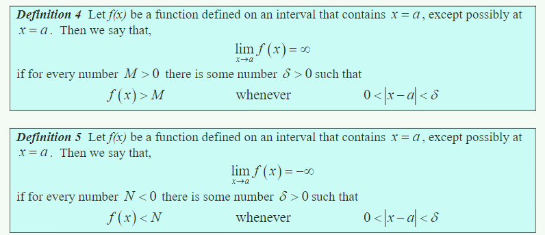</p>
<p>x 趋于正负无穷的定义：</p>
<p>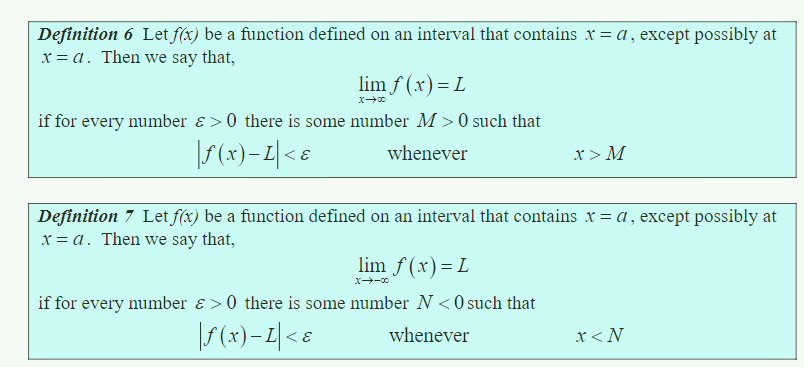</p>
<p>再次重申：极限一定是不断<strong>趋近</strong>的。</p>
<p>使用极限的精确定义来定义<strong>连续</strong>。注意：连续的定义中 x = a 必须在定义域内，与之前的极限定义不同。</p>
<p>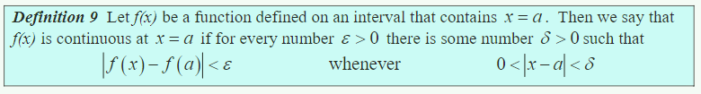</p>
<h1>Derivatives</h1>
<p>导数定义：</p>
<p>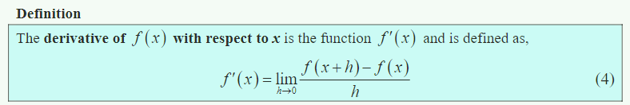</p>
<p>导数可能并不存在。如果f’(x) 在 x = a 处存在，那么我们称 f(x) 在 x=a 处是<strong>可导</strong>的（<strong>differentiable</strong>）。</p>
<p>如果 f(x) 在 x = a 处可导，那么 f(x) 在 x = a 处是连续的。但反过来并不成立。</p>
<h2 id="Differentiation-Formulas">Differentiation Formulas</h2>
<p>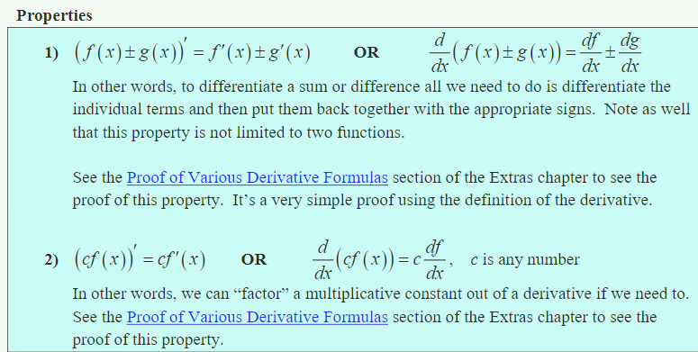</p>
<p>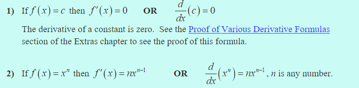</p>
<h2 id="函数乘积和商的求导（product-and-quotient-rule）">函数乘积和商的求导（product and quotient rule）</h2>
<p>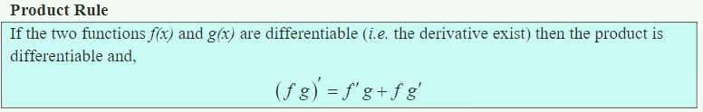</p>
<p>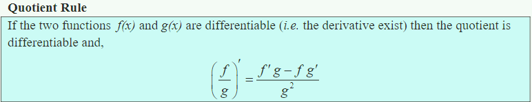</p>
<p>多个函数的乘积公式为</p>
<p>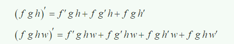</p>
<h2 id="Derivatives-of-trig-functions">Derivatives of trig functions</h2>
<p>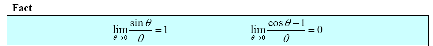</p>
<p>第二个式子可以通过第一个式子证明，写在书上了。主要应用 1 - cos(x) = sin^2^(x/2)</p>
<p>三角函数求导公式如下。注意，<strong>sec(x) = 1/cos(x)</strong> ; <strong>csc(x) = 1/sin(x)</strong> 。不要搞错了</p>
<p></p>
<h2 id="Derivatives-of-Exponential-and-Logarithm-Functions">Derivatives of Exponential and Logarithm Functions</h2>
<p>自然对数底数e 的定义：</p>
<p></p>
<p>指数函数求导公式（已证明，见后）</p>
<p>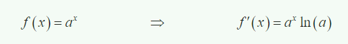</p>
<p>逆函数求导公式（已证明）</p>
<p>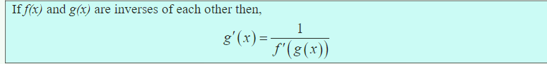</p>
<p>通过逆函数求导公式，指数函数和对数函数互为逆函数，因此推导出(lnx)’ = 1/x 。</p>
<p>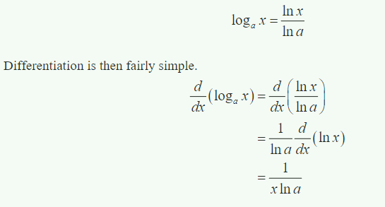</p>
<p>小结一下</p>
<p></p>
<p>注意区分指数函数的求导和多次函数（不知道这个咋称呼）的求导</p>
<p>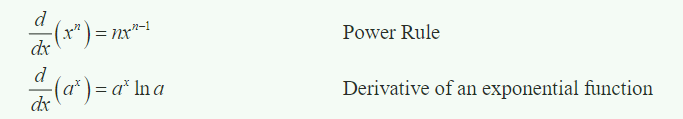</p>
<h2 id="Derivatives-of-Inverse-Trig-Functions">Derivatives of Inverse Trig Functions</h2>
<p>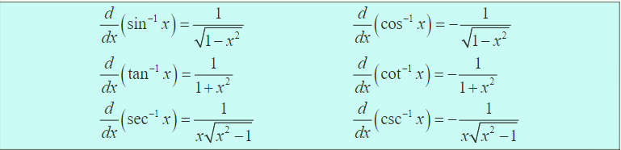</p>
<h2 id="Derivatives-of-Hyperbolic-Functions">Derivatives of Hyperbolic Functions</h2>
<p>有六种常见的双曲线函数（目前无用，且求导易证明）</p>
<p>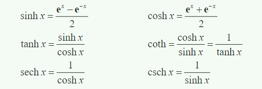</p>
<h2 id="Chain-Rule">Chain Rule</h2>
<p>复合函数的求导规则（未证明）</p>
<p>说复合函数不是很准确，这里给出的公式只嵌套了一层，实际可以嵌套n层。所以才叫<strong>Chain Rulu</strong>。求多层嵌套的复合函数需要多加小心，可以不用一步完成，分几步拆解。</p>
<p>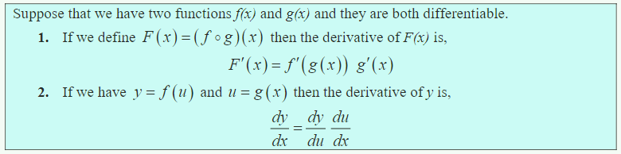</p>
<p>我们可以使用Chain Rule 和 (e^x^)’ = e^x^ 证明  (a^x^)’ = a^x^ ln(a)</p>
<h2 id="Implict-Differentiation">Implict Differentiation</h2>
<p>并不是所有的函数都能写成 y = f(x) 。</p>
<p>对于<strong>implict function</strong>，首先要记住，y 或 y(x) 其实是 x 的函数。第二步就是两边同时对x求导。</p>
<p><strong>implict function</strong> 的求导结果往往还包含y。</p>
<h2 id="Related-Rates">Related Rates</h2>
<p>当式子中存在两种函数时，如 x(t) 和 y(t) 。如果其中一个x’(t) 已知，那么就能求出y’(t) 。</p>
<p>在求解包含两种相关的函数的导数时，最重要的是要找到包含两个<strong>related rates</strong>的式子。</p>
<p>如果式子中含有更多的其它函数，需要进行<strong>消元</strong>。</p>
<h2 id="Higher-Order-Derivatives">Higher Order Derivatives</h2>
<p><strong>first derivative</strong> 和 <strong>second derivative</strong></p>
<p>对于多项式，如果其最高项的degree为n，那么其n+1阶求导及其后均为0。</p>
<p>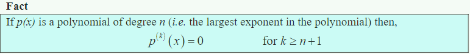</p>
<p>注意多阶导数和函数的n次方写法的区别</p>
<p>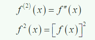</p>
<p>高阶导数的写法</p>
<p>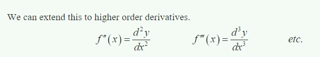</p>
<h2 id="Logarithmic-Differentiation">Logarithmic Differentiation</h2>
<p>有时，通过log函数能够简化运算(一般使用<strong>ln()</strong>)。</p>
<p>适用场景</p>
<ol>
<li>式子可以分解为多个式子<strong>相乘</strong>或<strong>相除</strong></li>
<li>y = (f(x))^g(x)^ 。例如 y = x^x^</li>
</ol>
<p>最后，总结一下不同的带有指数的求导公式</p>
<p>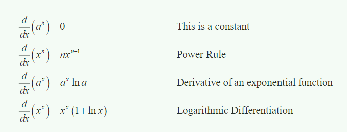</p>
<h1>Applications of Derivatives</h1>
<p>求导不仅仅是为了求导，是为了解决实际问题的。</p>
<h2 id="Rates-of-Change">Rates of Change</h2>
<p>复习上一章</p>
<h2 id="Critical-Points">Critical Points</h2>
<p>f(x) 的 Critical Points 的定义：</p>
<p>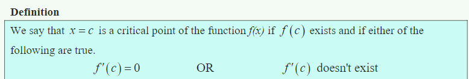</p>
<p>注意前提中是 f© 必须存在，这个前提很重要但也容易被忽略。</p>
<h2 id="Minimum-and-Maximum-Values">Minimum and Maximum Values</h2>
<p>首先，存在绝对极值和相对极值。很好理解，绝对的极值即在整个定义域内均为最大或最小，而相对的极值仅在某区域内。</p>
<p>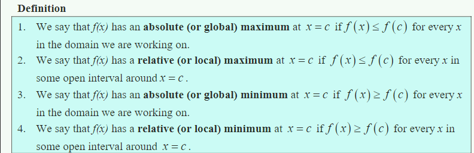</p>
<p>一图以蔽之</p>
<p>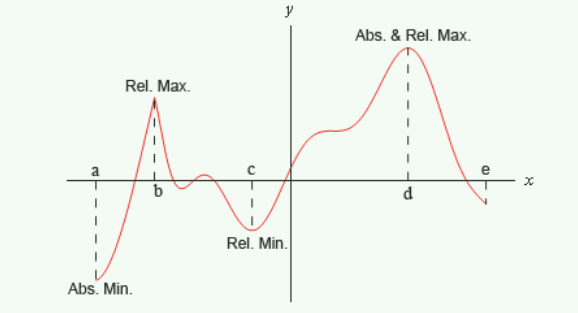</p>
<p>对于定义域两端的函数值能否成为相对极值，这一点一直有争议。本文中设定定义域两端的函数值不能成为相对极值。</p>
<p>绝对极值只能出现在<strong>相对极值</strong>和<strong>定义域两端的函数值</strong>中。</p>
<p>如果是连续函数，取一闭区间，则必存在绝对最大值和绝对最小值。定理表述如下</p>
<p>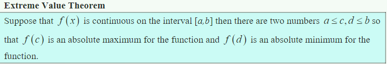</p>
<p>但是，这条定理并没有告诉我们绝对极值出现在哪，或者会出现几次。我们知道绝对极值一定存在。</p>
<p>但是定理中规定了要取一闭区间。如果不取区间，那么可能不存在绝对极值。函数在闭区间的连续性也是一个重要的前提。</p>
<p>取到<strong>相对</strong>极值的条件是 Critical Point。定理如下</p>
<p>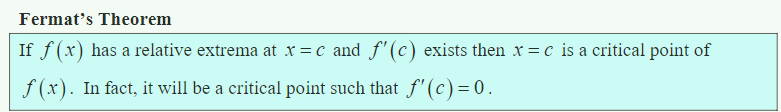</p>
<p>但是反过来说并不成立，也就是说不是所有的Critical Point 都是相对极值。也就是说相对极值肯定是Critical Point ，Critical Points 是 all possible relative extreme 。</p>
<p>这个定理没说全。如果f’© 不存在，也是Critical Point ，也是 possible relative extreme。</p>
<p>重申一遍，我们说possible relative extreme 也就是说不是所有的Critical Point 都是相对极值。但是我们把所有的Critical Point 都找出来，那么所有的relative extreme 就肯定都在里面了，不会有缺漏。用俗话说，就是宁肯杀错一千，不可放过一个。</p>
<h2 id="Finding-Absolute-Extreme">Finding Absolute Extreme</h2>
<p>书中没说，但感觉这些定理的条件中几乎都需要函数满足<strong>连续性</strong>（continuous)。但是一般用到的函数基本都满足连续性。</p>
<p>首先我们需要根据前面的Extreme Value Theorem 确定函数在给定的闭区间<strong>存在</strong>绝对极值。再根据前面的Fermat’s Theorem ，所有的Critical Points 是 all possible relative extremes 。而根据我们之前的认识，所有的绝对极值只会出现在相对极值或函数区间两端的值中。</p>
<p>因此，所有的Critical Points 加上 函数区间两端的函数值 即是 all possible absolute extremes。</p>
<p>找绝对极值的一般步骤。记得要剔除不在闭区间的Critical Points。</p>
<p>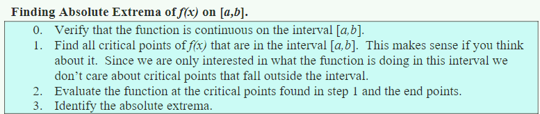</p>
<h2 id="The-shape-of-a-graph-part-I">The shape of a graph,part I</h2>
<p>首先，我们确认<strong>递增</strong>和<strong>递减</strong>的定义</p>
<p>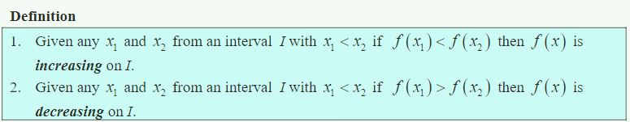</p>
<p>用一阶导数来定义则如下</p>
<p>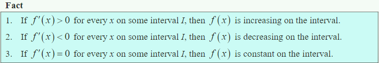</p>
<p>之前这步其实做过了。</p>
<p>首先确定函数的<strong>连续性</strong>。然后确认Critical Points 。在分割的每个区间内取一点，该点f’(x) (注意不是原函数)的符号即是此区间的符号。</p>
<p>重申：Critical Points 也包括了f’(x) 不存在的情况。这种情况下，f’(x) 也可能改变符号。</p>
<p>知道 f(x) 在哪些区间递增或递减，那么就能画出 f(x) 的草图。</p>
<p>判断Critical Point 是否是相对极值：</p>
<p>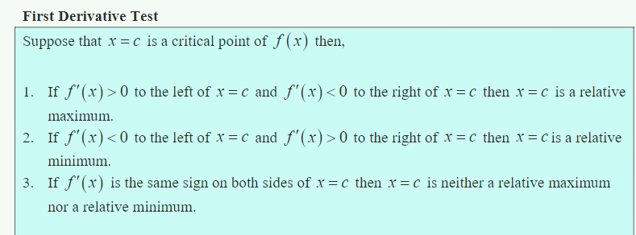</p>
<h2 id="The-shape-of-a-graph-part-2">The shape of a graph, part 2</h2>
<p>这里需要用到<strong>二阶导数</strong>，主要是考虑函数的凹凸性(concavity)。如图所示。用书上的话说，函数如果趋于&quot;open up&quot; ，那么就是 Concave Up；如果趋于 &quot; open down &quot; ，那么就是 Concave down。</p>
<p></p>
<p>数学定义：切线在函数上方或下方</p>
<p></p>
<p>concavity 与函数的增减毫无关系。</p>
<p>inflection point 的定义</p>
<p></p>
<p></p>
<p>这里应该写错了，f’'(x) &lt; 0 应该是 concave down 。</p>
<p>因此，infection point 应该是 f’‘(x) = 0  或者 <strong>不存在</strong>的地方。 但是并不是 f’'(x) = 0 或者不存在的地方，就一定是 infection point 。</p>
<p>我们只有通过确认这个点两侧的凹凸性情况，我们才能确认infection point 。</p>
<p>这和前面的相对极值是类似的。所有的相对极值都是critical points ，但是不是所有的 critical points 都是 相对极值。只有确认了这个点两侧的递增递减情况，我们才能确认这个点是不是相对极值。</p>
<p>通过确定凹凸性我们能画出更精细的草图。</p>
<p>根据f&quot;(x) 的符号能确定 Critical point （只适用于f’(x) = 0 ，不适用于不存在）是否是相对极值。定理如下</p>
<p></p>
<p>注意，这里没有说f’(x) 不存在的critical point 的情况。注意第三种情况下如果f’‘(x) = 0 , 那么可能是任何情况。那么就要使用 first derivative test 判断这个 critical point 两侧的f’(x) 的符号。</p>
<h2 id="The-Mean-Value-Theorem">The Mean Value Theorem</h2>
<p>Rolle’s Theorem ：满足一定条件的函数f’(x) ，两个相等的函数值之间一定存在一个点，其f’(x) = 0。</p>
<p></p>
<p>The mean value theorem 如下</p>
<p></p>
<p>一样的，这个定理没有告诉我们 c 在哪 , 只是说至少有一个 c。</p>
<p>Rolle’s Theorem 只是 mean value theorem 的一个特例。</p>
<h2 id="Optimization">Optimization</h2>
<p>求解极值的一般方法：</p>
<ol>
<li>
<p>通过<strong>Finding Absolute Extreme</strong> 方法。从critical points 和 endpoints 中找。需要满足两个条件：闭区间和连续性。</p>
</li>
<li>
<p>通过<strong>First Derivative Test</strong>方法。根据此方法，如果一个点两侧f’(x) 符号不同，则此点为相对极值。要求连续性。 如果只有一个Critical points , 易知如下定理。</p>
<p></p>
</li>
<li>
<p>通过二阶求导。二阶求导的使用主要包括以下方面。一是去除一些critical points ，通过求critical points 的 二阶导数，我们能得知其是否是相对极值。二是如果只有一个critical point，判断其是否是我们要的绝对极值，这和第二点一致。</p>
<p></p>
</li>
</ol>
<h2 id="More-Optimization-Problems">More Optimization Problems</h2>
<p>就是更多的题目。</p>
<p>一个小点：如果 求式子 A = B时，由于有根式，两边平方，A^2^=B^2^，此时求出的解不一定是真的解，需要带入原式进行后验。</p>
<p>证明：A^2^=B^2^ 其解可能是 A =B , 也可能是 A = -B。</p>
<h2 id="Indeterminate-forms-and-L’Hospital’s-Rule">Indeterminate forms and L’Hospital’s Rule</h2>
<p></p>
<p>如果是0/0 或 无穷/无穷，那么其极限等于其一阶导数之商的极限。</p>
<p>对于其它类型的indeterminate forms（不确定形式），可以转换为上述的两种形式。</p>
<p></p>
<h2 id="Linear-Approximations">Linear Approximations</h2>
<p>对于某一点的切线方程，可以用于近似估计附近点的函数值。</p>
<h2 id="Differentials">Differentials</h2>
<p>这里的Differentials 就是指 dy 和 dx</p>
<p>dy = f’(x) dx</p>
<p>dy dx 就是当x变化很小时，x 的变化量和 y 的变化量。</p>
<h2 id="Newton’s-Method">Newton’s Method</h2>
<p>这个方法目前没什么意义了。</p>
<p>估计f(x) 的根</p>
<p></p>
<h2 id="Business-Applications">Business Applications</h2>
<p>商业中的实例。</p>
<h1>Integrals</h1>
<h2 id="Indefinite-Integrals">Indefinite Integrals</h2>
<p>首先我们要知道如何从导数函数反推原函数，注意需要加一个 常数c 。因为常数的导数是0。所以，实际上，如果只知道导数函数，求解出的原函数有无数个（因为c不确定）。</p>
<p>一些基础定义</p>
<p></p>
<p>不定积分的部分性质</p>
<p></p>
<p></p>
<p>积分对于变量之间的<strong>乘</strong>或<strong>除</strong>没有公式。</p>
<p>求解后，可以求导，看是否与被积函数一致。</p>
<h2 id="Computing-Indefinite-Integrals">Computing Indefinite Integrals</h2>
<p>其实和求导公式一致，不过是反过来。</p>
<h2 id="Substitution-Rule-for-Indefinite-Integrals">Substitution Rule for Indefinite Integrals</h2>
<p></p>
<p>容易得到，因为 d(g(x)) = g’(x) d(x) 。</p>
<p>替换后积分式子中不能再有x ，要全变成 u 表示的式子。</p>
<h2 id="More-Substitution-Rule">More Substitution Rule</h2>
<h2 id="Area-Problem">Area Problem</h2>
<h2 id="The-Definition-of-the-Definite-Integral">The Definition of the Definite Integral</h2>
<p></p>
<p>这里的定义没有说清楚每个小长方形的高选用哪个点的函数值。</p>
<p></p>
<p>对定积分的解释之一是，定积分是f(x) 在 x 轴上的<strong>净面积</strong>（net area) 。是原函数从 a 到 b 的变化量。</p>
<p></p>
<p></p>
<p></p>
<p></p>
<p>注意，不定积分要求在[a,b]间具有<strong>连续性</strong></p>
<h2 id="Substitution-Rule-for-Definite-Integrals">Substitution Rule for Definite Integrals</h2>
<p>不定积分换元的问题在于，原来的不定积分上下限都是针对x的，而不是u。</p>
<p>有两种策略：1. 最后将u 替换回 x  ; 2. 将原来的上下极限换成u的上下极限。我感觉第二种更方便。</p>
<h1>Applications of Integrals</h1>
<h2 id="Average-Function-Value">Average Function Value</h2>
<p></p>
<p></p>
<h2 id="Volumes-of-Solids-of-Revolution-Method-of-Rings">Volumes of Solids of Revolution / Method of Rings</h2>
<p>求旋转体的体积，不想看了，以后再看。</p>
<h1>Extras</h1>
<p>其实最后一部分附录是<strong>精华</strong>，看懂这些证明过程很重要。但是人生苦短，我急于初步完成这本书，因此只能先到这了，这一部分没看。2019年12月20号。</p>
<h2 id="Proof-of-Various-Limit-Properties">Proof of Various Limit Properties</h2>
<p>这一部分的证明都是严格根据极限的数学定义证明的，严谨但是繁琐，没看。</p>
 
      <!-- reward -->
      
    </div>
    

    <!-- copyright -->
    
    <div class="declare">
      <ul class="post-copyright">
        <li>
          <i class="ri-copyright-line"></i>
          <strong>版权声明： </strong>
          
          本博客所有文章除特别声明外，著作权归作者所有。转载请注明出处！
          
        </li>
      </ul>
    </div>
    
    <footer class="article-footer">
       
<div class="share-btn">
      <span class="share-sns share-outer">
        <i class="ri-share-forward-line"></i>
        分享
      </span>
      <div class="share-wrap">
        <i class="arrow"></i>
        <div class="share-icons">
          
          <a class="weibo share-sns" href="javascript:;" data-type="weibo">
            <i class="ri-weibo-fill"></i>
          </a>
          <a class="weixin share-sns wxFab" href="javascript:;" data-type="weixin">
            <i class="ri-wechat-fill"></i>
          </a>
          <a class="qq share-sns" href="javascript:;" data-type="qq">
            <i class="ri-qq-fill"></i>
          </a>
          <a class="douban share-sns" href="javascript:;" data-type="douban">
            <i class="ri-douban-line"></i>
          </a>
          <!-- <a class="qzone share-sns" href="javascript:;" data-type="qzone">
            <i class="icon icon-qzone"></i>
          </a> -->
          
          <a class="facebook share-sns" href="javascript:;" data-type="facebook">
            <i class="ri-facebook-circle-fill"></i>
          </a>
          <a class="twitter share-sns" href="javascript:;" data-type="twitter">
            <i class="ri-twitter-fill"></i>
          </a>
          <a class="google share-sns" href="javascript:;" data-type="google">
            <i class="ri-google-fill"></i>
          </a>
        </div>
      </div>
</div>

<div class="wx-share-modal">
    <a class="modal-close" href="javascript:;"><i class="ri-close-circle-line"></i></a>
    <p>扫一扫，分享到微信</p>
    <div class="wx-qrcode">
      
    </div>
</div>

<div id="share-mask"></div>  
  <ul class="article-tag-list" itemprop="keywords"><li class="article-tag-list-item"><a class="article-tag-list-link" href="/tags/%E5%BE%AE%E7%A7%AF%E5%88%86/" rel="tag">微积分</a></li><li class="article-tag-list-item"><a class="article-tag-list-link" href="/tags/%E7%90%86%E8%AE%BA%E5%AD%A6%E4%B9%A0/" rel="tag">理论学习</a></li></ul>

    </footer>
  </div>

   
  <nav class="article-nav">
    
      <a href="/posts/9e4272e7/" class="article-nav-link">
        <strong class="article-nav-caption">上一篇</strong>
        <div class="article-nav-title">
          
            微积分课程第二部分学习笔记
          
        </div>
      </a>
    
    
      <a href="/posts/ac7827ff/" class="article-nav-link">
        <strong class="article-nav-caption">下一篇</strong>
        <div class="article-nav-title">只只和男朋友</div>
      </a>
    
  </nav>

   
<!-- valine评论 -->
<div id="vcomments-box">
  <div id="vcomments"></div>
</div>
<script src="//cdn1.lncld.net/static/js/3.0.4/av-min.js"></script>
<script src="https://cdn.jsdelivr.net/npm/valine@1.4.14/dist/Valine.min.js"></script>
<script>
  new Valine({
    el: "#vcomments",
    app_id: "yHN3kf7fHt5wvleM2DVoHLdY-gzGzoHsz",
    app_key: "RPIwmdftljIzOtAULwc7JCAp",
    path: window.location.pathname,
    avatar: "monsterid",
    placeholder: "靓仔，看完留个评论再走哇！\n只需要填入昵称和邮箱就可以了",
    recordIP: true,
  });
  const infoEle = document.querySelector("#vcomments .info");
  if (infoEle && infoEle.childNodes && infoEle.childNodes.length > 0) {
    infoEle.childNodes.forEach(function (item) {
      item.parentNode.removeChild(item);
    });
  }
</script>
<style>
  #vcomments-box {
    padding: 5px 30px;
  }

  @media screen and (max-width: 800px) {
    #vcomments-box {
      padding: 5px 0px;
    }
  }

  #vcomments-box #vcomments {
    background-color: #fff;
  }

  .v .vlist .vcard .vh {
    padding-right: 20px;
  }

  .v .vlist .vcard {
    padding-left: 10px;
  }
</style>

 
   
     
</article>

</section>
      <footer class="footer">
  <div class="outer">
    <ul>
      <li>
        Copyrights &copy;
        2019-2021
        <i class="ri-heart-fill heart_icon"></i> Vincere Zhou
      </li>
    </ul>
    <ul>
      <li>
        
        
        <span>
  <span><i class="ri-user-3-fill"></i>访问人数:<span id="busuanzi_value_site_uv"></span></s>
  <span class="division">|</span>
  <span><i class="ri-eye-fill"></i>浏览次数:<span id="busuanzi_value_page_pv"></span></span>
</span>
        
      </li>
    </ul>
    <ul>
      
    </ul>
    <ul>
      
    </ul>
    <ul>
      <li>
        <!-- cnzz统计 -->
        
        <script type="text/javascript" src='https://s9.cnzz.com/z_stat.php?id=1278069914&amp;web_id=1278069914'></script>
        
      </li>
    </ul>

    <!-- 与只只在一起天数 -->
	<ul>
		<li><span id="lovetime_span"></span></li>
	</ul>
    <script type="text/javascript">			
        function show_runtime() {
            window.setTimeout("show_runtime()", 1000);
            X = new Date("03/04/2021 22:11:00");
            Y = new Date();
            T = (Y.getTime() - X.getTime());
            M = 24 * 60 * 60 * 1000;
            a = T / M;
            A = Math.floor(a);
            b = (a - A) * 24;
            B = Math.floor(b);
            c = (b - B) * 60;
            C = Math.floor((b - B) * 60);
            D = Math.floor((c - C) * 60);
            lovetime_span.innerHTML = "只只和周周在一起了 " + A + "天" + B + "小时" + C + "分" + D + "秒"
        }
        show_runtime();
    </script>

  </div>
</footer>
      <div class="float_btns">
        <div class="totop" id="totop">
  <i class="ri-arrow-up-line"></i>
</div>

<div class="todark" id="todark">
  <i class="ri-moon-line"></i>
</div>

      </div>
    </main>
    <aside class="sidebar on">
      <button class="navbar-toggle"></button>
<nav class="navbar">
  
  <div class="logo">
    <a href="/"></a>
  </div>
  
  <ul class="nav nav-main">
    
    <li class="nav-item">
      <a class="nav-item-link" href="/">主页</a>
    </li>
    
    <li class="nav-item">
      <a class="nav-item-link" href="/archives">归档</a>
    </li>
    
    <li class="nav-item">
      <a class="nav-item-link" href="/categories">分类</a>
    </li>
    
    <li class="nav-item">
      <a class="nav-item-link" href="/tags">标签</a>
    </li>
    
    <li class="nav-item">
      <a class="nav-item-link" href="/friends">友链</a>
    </li>
    
    <li class="nav-item">
      <a class="nav-item-link" href="/posts/ac7827ff">我的只只</a>
    </li>
    
    <li class="nav-item">
      <a class="nav-item-link" href="/about">关于我</a>
    </li>
    
  </ul>
</nav>
<nav class="navbar navbar-bottom">
  <ul class="nav">
    <li class="nav-item">
      
      <a class="nav-item-link nav-item-search"  title="搜索">
        <i class="ri-search-line"></i>
      </a>
      
      
      <a class="nav-item-link" target="_blank" href="/atom.xml" title="RSS Feed">
        <i class="ri-rss-line"></i>
      </a>
      
    </li>
  </ul>
</nav>
<div class="search-form-wrap">
  <div class="local-search local-search-plugin">
  <input type="search" id="local-search-input" class="local-search-input" placeholder="Search...">
  <div id="local-search-result" class="local-search-result"></div>
</div>
</div>
    </aside>
    <script>
      if (window.matchMedia("(max-width: 768px)").matches) {
        document.querySelector('.content').classList.remove('on');
        document.querySelector('.sidebar').classList.remove('on');
      }
    </script>
    <div id="mask"></div>

<!-- #reward -->
<div id="reward">
  <span class="close"><i class="ri-close-line"></i></span>
  <p class="reward-p"><i class="ri-cup-line"></i>请我喝杯咖啡吧~</p>
  <div class="reward-box">
    
    <div class="reward-item">
      
      <span class="reward-type">支付宝</span>
    </div>
    
    
    <div class="reward-item">
      
      <span class="reward-type">微信</span>
    </div>
    
  </div>
</div>
    
<script src="/js/jquery-2.0.3.min.js"></script>


<script src="/js/lazyload.min.js"></script>

<!-- Tocbot -->


<script src="/js/tocbot.min.js"></script>

<script>
  tocbot.init({
    tocSelector: '.tocbot',
    contentSelector: '.article-entry',
    headingSelector: 'h1, h2, h3, h4, h5, h6',
    hasInnerContainers: true,
    scrollSmooth: true,
    scrollContainer: 'main',
    positionFixedSelector: '.tocbot',
    positionFixedClass: 'is-position-fixed',
    fixedSidebarOffset: 'auto'
  });
</script>

<script src="https://cdn.jsdelivr.net/npm/jquery-modal@0.9.2/jquery.modal.min.js"></script>
<link rel="stylesheet" href="https://cdn.jsdelivr.net/npm/jquery-modal@0.9.2/jquery.modal.min.css">
<script src="https://cdn.jsdelivr.net/npm/justifiedGallery@3.7.0/dist/js/jquery.justifiedGallery.min.js"></script>

<script src="/dist/main.js"></script>

<!-- ImageViewer -->

<!-- Root element of PhotoSwipe. Must have class pswp. -->
<div class="pswp" tabindex="-1" role="dialog" aria-hidden="true">

    <!-- Background of PhotoSwipe. 
         It's a separate element as animating opacity is faster than rgba(). -->
    <div class="pswp__bg"></div>

    <!-- Slides wrapper with overflow:hidden. -->
    <div class="pswp__scroll-wrap">

        <!-- Container that holds slides. 
            PhotoSwipe keeps only 3 of them in the DOM to save memory.
            Don't modify these 3 pswp__item elements, data is added later on. -->
        <div class="pswp__container">
            <div class="pswp__item"></div>
            <div class="pswp__item"></div>
            <div class="pswp__item"></div>
        </div>

        <!-- Default (PhotoSwipeUI_Default) interface on top of sliding area. Can be changed. -->
        <div class="pswp__ui pswp__ui--hidden">

            <div class="pswp__top-bar">

                <!--  Controls are self-explanatory. Order can be changed. -->

                <div class="pswp__counter"></div>

                <button class="pswp__button pswp__button--close" title="Close (Esc)"></button>

                <button class="pswp__button pswp__button--share" style="display:none" title="Share"></button>

                <button class="pswp__button pswp__button--fs" title="Toggle fullscreen"></button>

                <button class="pswp__button pswp__button--zoom" title="Zoom in/out"></button>

                <!-- Preloader demo http://codepen.io/dimsemenov/pen/yyBWoR -->
                <!-- element will get class pswp__preloader--active when preloader is running -->
                <div class="pswp__preloader">
                    <div class="pswp__preloader__icn">
                        <div class="pswp__preloader__cut">
                            <div class="pswp__preloader__donut"></div>
                        </div>
                    </div>
                </div>
            </div>

            <div class="pswp__share-modal pswp__share-modal--hidden pswp__single-tap">
                <div class="pswp__share-tooltip"></div>
            </div>

            <button class="pswp__button pswp__button--arrow--left" title="Previous (arrow left)">
            </button>

            <button class="pswp__button pswp__button--arrow--right" title="Next (arrow right)">
            </button>

            <div class="pswp__caption">
                <div class="pswp__caption__center"></div>
            </div>

        </div>

    </div>

</div>

<link rel="stylesheet" href="https://cdn.jsdelivr.net/npm/photoswipe@4.1.3/dist/photoswipe.min.css">
<link rel="stylesheet" href="https://cdn.jsdelivr.net/npm/photoswipe@4.1.3/dist/default-skin/default-skin.min.css">
<script src="https://cdn.jsdelivr.net/npm/photoswipe@4.1.3/dist/photoswipe.min.js"></script>
<script src="https://cdn.jsdelivr.net/npm/photoswipe@4.1.3/dist/photoswipe-ui-default.min.js"></script>

<script>
    function viewer_init() {
        let pswpElement = document.querySelectorAll('.pswp')[0];
        let $imgArr = document.querySelectorAll(('.article-entry img:not(.reward-img)'))

        $imgArr.forEach(($em, i) => {
            $em.onclick = () => {
                // slider展开状态
                // todo: 这样不好，后面改成状态
                if (document.querySelector('.left-col.show')) return
                let items = []
                $imgArr.forEach(($em2, i2) => {
                    let img = $em2.getAttribute('data-idx', i2)
                    let src = $em2.getAttribute('data-target') || $em2.getAttribute('src')
                    let title = $em2.getAttribute('alt')
                    // 获得原图尺寸
                    const image = new Image()
                    image.src = src
                    items.push({
                        src: src,
                        w: image.width || $em2.width,
                        h: image.height || $em2.height,
                        title: title
                    })
                })
                var gallery = new PhotoSwipe(pswpElement, PhotoSwipeUI_Default, items, {
                    index: parseInt(i)
                });
                gallery.init()
            }
        })
    }
    viewer_init()
</script>

<!-- MathJax -->

<script type="text/x-mathjax-config">
  MathJax.Hub.Config({
      tex2jax: {
          inlineMath: [ ['$','$'], ["\\(","\\)"]  ],
          processEscapes: true,
          skipTags: ['script', 'noscript', 'style', 'textarea', 'pre', 'code']
      }
  });

  MathJax.Hub.Queue(function() {
      var all = MathJax.Hub.getAllJax(), i;
      for(i=0; i < all.length; i += 1) {
          all[i].SourceElement().parentNode.className += ' has-jax';
      }
  });
</script>

<script src="https://cdn.jsdelivr.net/npm/mathjax@2.7.6/unpacked/MathJax.js?config=TeX-AMS-MML_HTMLorMML"></script>
<script>
  var ayerConfig = {
    mathjax: true
  }
</script>

<!-- Katex -->

<!-- busuanzi  -->


<script src="/js/busuanzi-2.3.pure.min.js"></script>


<!-- ClickLove -->

<!-- ClickBoom1 -->

<!-- ClickBoom2 -->

<!-- CodeCopy -->


<link rel="stylesheet" href="/css/clipboard.css">

<script src="https://cdn.jsdelivr.net/npm/clipboard@2/dist/clipboard.min.js"></script>
<script>
  function wait(callback, seconds) {
    var timelag = null;
    timelag = window.setTimeout(callback, seconds);
  }
  !function (e, t, a) {
    var initCopyCode = function(){
      var copyHtml = '';
      copyHtml += '<button class="btn-copy" data-clipboard-snippet="">';
      copyHtml += '<i class="ri-file-copy-2-line"></i><span>COPY</span>';
      copyHtml += '</button>';
      $(".highlight .code pre").before(copyHtml);
      $(".article pre code").before(copyHtml);
      var clipboard = new ClipboardJS('.btn-copy', {
        target: function(trigger) {
          return trigger.nextElementSibling;
        }
      });
      clipboard.on('success', function(e) {
        let $btn = $(e.trigger);
        $btn.addClass('copied');
        let $icon = $($btn.find('i'));
        $icon.removeClass('ri-file-copy-2-line');
        $icon.addClass('ri-checkbox-circle-line');
        let $span = $($btn.find('span'));
        $span[0].innerText = 'COPIED';
        
        wait(function () { // 等待两秒钟后恢复
          $icon.removeClass('ri-checkbox-circle-line');
          $icon.addClass('ri-file-copy-2-line');
          $span[0].innerText = 'COPY';
        }, 2000);
      });
      clipboard.on('error', function(e) {
        e.clearSelection();
        let $btn = $(e.trigger);
        $btn.addClass('copy-failed');
        let $icon = $($btn.find('i'));
        $icon.removeClass('ri-file-copy-2-line');
        $icon.addClass('ri-time-line');
        let $span = $($btn.find('span'));
        $span[0].innerText = 'COPY FAILED';
        
        wait(function () { // 等待两秒钟后恢复
          $icon.removeClass('ri-time-line');
          $icon.addClass('ri-file-copy-2-line');
          $span[0].innerText = 'COPY';
        }, 2000);
      });
    }
    initCopyCode();
  }(window, document);
</script>


<!-- CanvasBackground -->


    
  </div>
<script src="/live2dw/lib/L2Dwidget.min.js?094cbace49a39548bed64abff5988b05"></script><script>L2Dwidget.init({"pluginRootPath":"live2dw/","pluginJsPath":"lib/","pluginModelPath":"assets/","tagMode":false,"debug":false,"model":{"jsonPath":"live2d-widget-model-wanko"},"display":{"position":"left","width":150,"height":300,"hOffset":80,"vOffset":-70},"mobile":{"show":false,"scale":0.5},"log":false});</script></body>

</html>